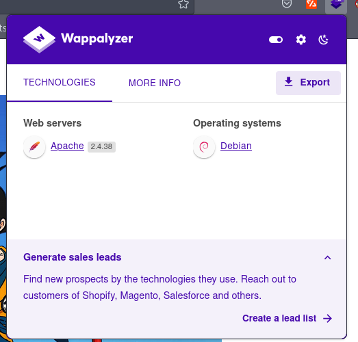

Writeup - Dr4G0n B4ll
Configuración del Laboratorio
Necesitaremos tener instalado: - Máquina Parrot o Kali (Máquina Atacante) - Máquinta Dr4g0n B4ll (Máquina Víctima) -> https://mega.nz/file/AoJ3EAhI#WIMxmfUXh_vr6C5lGqeCbmKOrNrJU6rB1mMc4wS7F24
Una vez tenemos nuestras máquinas en nuestro sistema de Virtualización, vamos a configurar nuestra Red en ambas máquinas con la misma configuración, en este caso, NAT.
Descubrimiento del Equipo Víctima
Para descubrir los distintos equipos que tenemos en nuestra red lo podemos hacer de dos formas distintas: - fping: fping es una pequeña herramienta de línea de comandos para enviar solicitudes de echo ICMP (Internet Control Message Protocol) a hosts de la red, similar a ping, pero con un rendimiento mucho mayor cuando se hace ping a múltiples hosts. - netdiscover: Netdiscover al igual que fping sirve para describir equipos dentro de un rango de red pero usando el protocolo ARP.
Veremos que se realiza con ambos comandos la identificación del equipo víctima. Para ello primero tenemos que ver la IP de nuestra máquina atacante.
Como vemos en la imagen, la ip es la siguiente 192.168.194.132, por tanto, y teniendo nuestra máquina Dr4g0n B4ll arrancada, empezamos con el descubrimiento de equipos.

Observamos que nos ha encontrado dos equipos pero si descartamos el primero que es nuestro Gateway, sólo tendríamos el acabado en 137 que tiene pinta a ser nuestra máquina víctima. Comprobemos con netdiscover para cerciorarnos.
netdiscover -r 192.168.194.0/24
Efectivamente vemos que nos encontramos con la máquina 137. Por tanto, vamos a pasar a la fase de escaneo con esta IP.
Fase de Escaneo y Enumeración
La siguiente fase es la de escanear los puertos y servicios que corren en esta máquina. Para ello haremos uso de Nmap. En mi caso, siempre me gusta realizar dos tipos de escaneos, uno exclusivo de los puertos y una vez obtenidos los puertos, realizar otro para averiguar los servicios y versiones específicos que corren para esos puertos.
Primer comando Nmap:
nmap -p- --open -T5 -v -n 192.168.194.137
- -p-: Escaneamos todos los puertos
- --open: Sólo los puertos con estado Abierto.
- -T5: Nivel de agresividad para hacer el escaneo en el envío de paquetes siendo 5 el más alto (Recomendable siempre y cuando sea en entornos controlados.)
- -v: Verbose para ver el output del comando en tiempo real.
- -n: Evitar la resolución DNS
Esperamos a que termine el escaneo pero a priori ya podemos ver que se encuentran el puerto 80 y 22 abiertos.
Nos encontramos exclusivamente con los puertos 22 y 80 abiertos, ahora vamos a proceder a analizar las versiones que corren tras estos servicios SSH y HTTP respectivamente.
nmap -p22,80 -sCV -v 192.168.194.137
Vemos que en el puerto 22 nos encontramos con un OpenSSH 7.9p1 y que en el puerto 80 tenemos un Apache httpd 2.4.38.
Al tener un puerto 80 abierto vamos a ir a la web para analizar más en detalle y seguir con la enumeración.
Para trabajar más cómodos vamos a asignar a nuestra IP Víctima un DNS en nuestro archivo /etc/hosts
Ahora vamos a nuestro navegador y busquemos por la siguiente URL: http://dragonball.uco
Vemos que nos muestra un portal web con una imagen de Dragon Ball. Llegados a este punto suelo realizar 3 apartados que sigo siempre en un portal web:
- Revisar la tecnología usada con el Addon Wappalyzer para seguir obteniendo información del servicio ya que podría usar tecnología con versiones desactualizas.
- Analizar el código fuente.
- Revisar el fichero Robots.txt
Empezemos viendo Wappalyzer:

En este caso no nos ofrece más información de la que ya sabíamos. Pasemos al siguiente paso (analizar el código fuente de la web):
Analizando el código fuente no vemos nada raro pero observamos por el scrollbar que posee demasiada longitud para el contenido que tiene la web, vayamos bajando...
Bingo!! Encontramos un mensaje codificado. Si tenemos cierta experiencia nos podemos dar cuenta de que se parece bastante a un Base64 pero con la peculiaridad de que no aparecen los dos iguales al final... Por lo que podemos suponer que igual es un Base64 concatenado varias veces. Para ello vamos utilizar la herramienta Cyberchef https://gchq.github.io/CyberChef/
En este caso, usaremos Magic que nos permite especificar el número de repeticiones.
Con una repetición de 3 veces, hemos encontrado en texto claro la palabra DRAGON BALL. A priori no nos dice nada, pero sigamos con nuestros pasos establecidos y ya veremos como proseguimos después.
El siguiente y último paso es analizar el archivo robots.txt.
Nos volvemos a encontrar con lo que parece un mensaje codificado en Base64, pero esta vez más parecido a la sintaxis de un Base64. Procedamos a decodificar el mensaje.
echo -n "<mensaje>" | base64 -d
"Encuentra el directorio oculto".... Nosotros previamente habíamos encontrado una palabra sospechosa, ¿podría ser un directorio oculto? Probemos a introducirlo en la URL.
Efectivamente, es un directorio que contiene un secret.txt y una carpeta llamada vulnhub.
Analicemos previamente el secret.txt que tiene más pinta de haber algo interesante...
Una lista de directorios... A priori me llama el username y passwd, comprobemos si existen...
Fase de Explotación
Nada... y he seguido comprobando y pasaría lo mismo con el resto de los directorios. Okey, pasemos a la carpeta Vulnhub a ver si de ahí encontramos algo interesante...
Nos encontramos con una imagen y un login... La imagen vamos a verla y posteriormente a analizar con herramientas de esteganografía por si tuviera algo oculto...
Vemos que es una imagen normal pero un tanto peculiar, vamos a descargarla y ver si conlleva algo dentro usando la herramienta de Stego Stegseek que nos permite comprobar si existe algún fichero oculto en su interior utilizando un Diccionario para aplicar fuerza bruta.
wget <enlace>
stegseek aj.jpg /usr/share/wordlists/rockyou.txt
Boom!! Nos encontramos con una clave privada id_rsa gracias a la herramienta stegseek y la palabra para descargar el archivo oculto resultaba ser love.
Al extraerlo se nos ha guardado con el nombre aj.jpg.out, vamos a cambiarlo a id_rsa.
mv aj.jpg.out id_rsa
Vale, tenemos una clave pero nos falta un usuario potencial... Si recordamos nos faltó por analizar el login.html veamos el contenido de esta página.
Al analizar la página podemos ver que dice Welcome to xmen, por lo que parece ser que xmen puede ser un usuario potencial. Comprobemos si nos podemos conectar por ssh usando la clave privada a este usuario.
Nos aparece un error de que los permisos asignados a la clave privada id_rsa no son los correctos, vayamos a googlear y comprobar qué permisos debemos de asignarle...
Efectivamente, tenemos que asignarle al archivo el permiso 600...
chmod 600 id_rsa
Ahora con el permiso correctamente asignado, veamos si podemos acceder por ssh al usuario xmen.
Entramos al sistema como el usuario xmen!!! Ahora bien, necesitamos ser root.
Fase de Escalada de Privilegios
Vamos a comprobar en el usuario xmen los binarios SUID que tiene habilitados. Para ello, escribimos lo siguiente:
find \ /-perm -4000 2>/dev/null
Nos encotramos algo curioso y es que dentro del usuario xmen y dentro de la carpeta script, tenemos un binario llamado shell con permisos SUID, veámos qué ejecuta este binario.
Nos está ejecutando el comando de sistema PS. Además justo en la misma carpeta tenemos demo.c que parece ser que ha sido el programa con el que se ha compilado shell.
Efectivamente, está llamando al comando del sistema ps. LLegados a este punto vamos a proceder a hacer un Path Hijacking, es decir, un secuestro del PATH.
Para ello lo que vamos a crear es un fichero ejectuable llamado ps y cambiaremos el PATH indicándole que como primera ruta a ejecutar sea donde nosotros tenemos el fichero ps que lo que habrá escrito será lo siguiente:
bash -p
Lo que nos permite es que al ser un binario SUID nos ejecuta los ficheros de forma temporal siendo el usuario propietario del archivo, es decir, root. Por tanto vamos a proceder a realizar el Path Hijacking.
Comprobamos previamente que el binario shell tiene como propietario a root. Ahora vamos a crear el fichero y le damos permisos de ejecución con
chmod +x ps
No podemos crear el fichero aquí ya que el propietario es root, por lo que podemos ir a la carpeta /tmp/ o a nuestro /home/ ya que ahí si podemos crear el fichero. En mi caso, iré a la carpeta tmp.
Creamos el fichero, le asignamos permisos de ejecución y en el PATH indicamos que inicie desde la carpeta tmp, de este modo, cuando ejecutemos el comando ps empezará a ejecutar cualquier binario llamado ps desde la carpeta /tmp/, por tanto, ejecutará bash -p con el objetivo de convertirnos en root.

Nos vamos a la carpeta script y ejecutamos shell. Finalmente somos ROOT!!!
Espero que os haya gustado la máquina y hayáis aprendido, al menos que os quedéis con lo más importante que es entender como funciona el Path Hijacking.